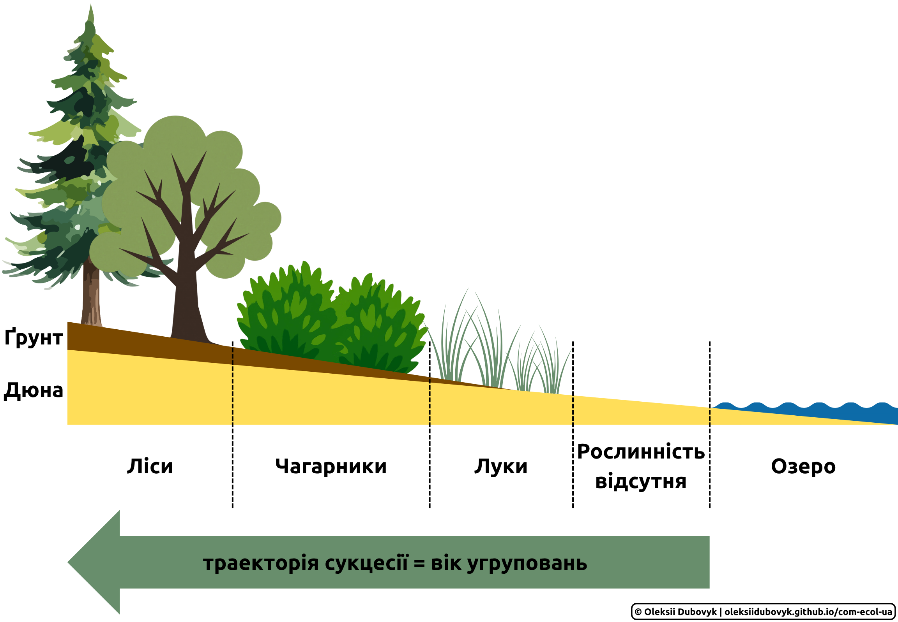
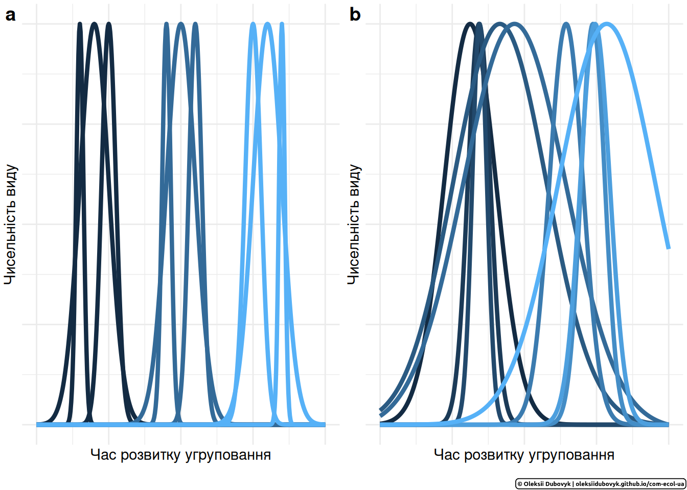
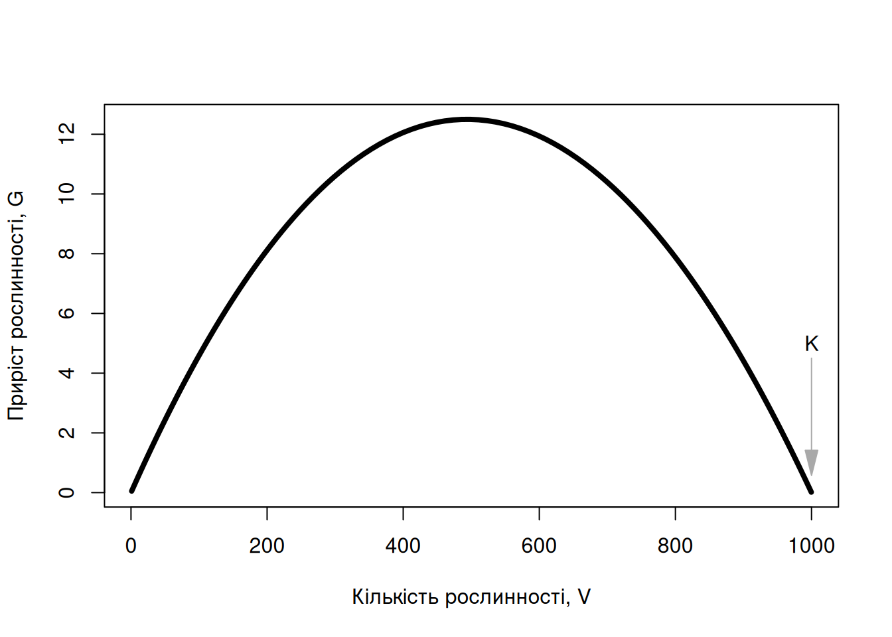
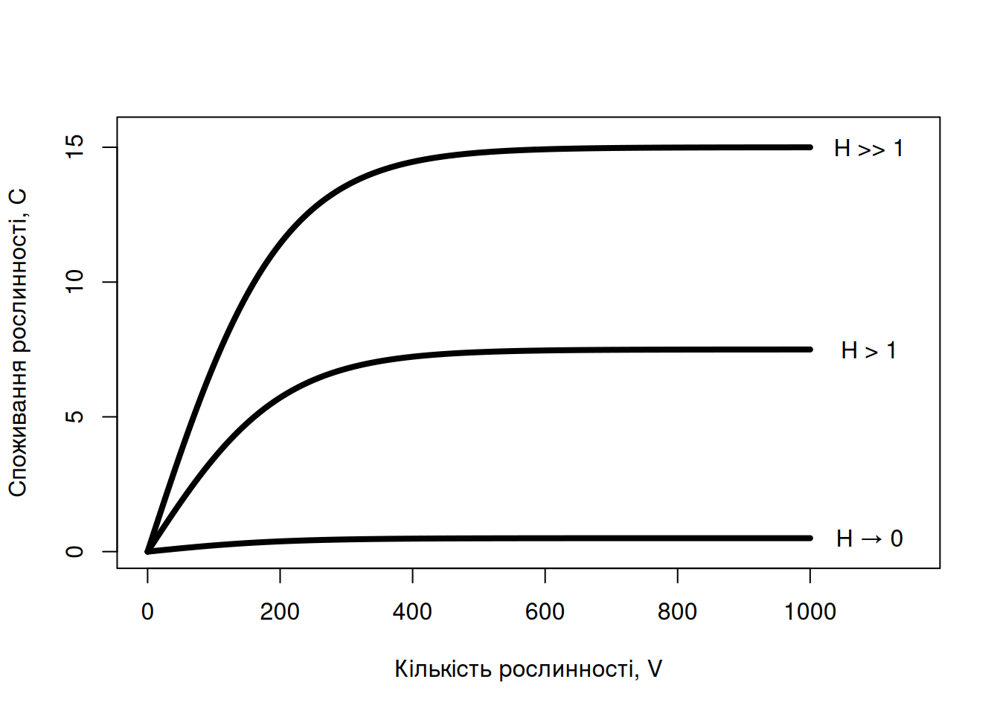
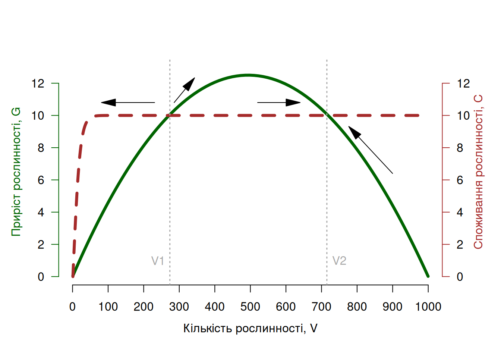
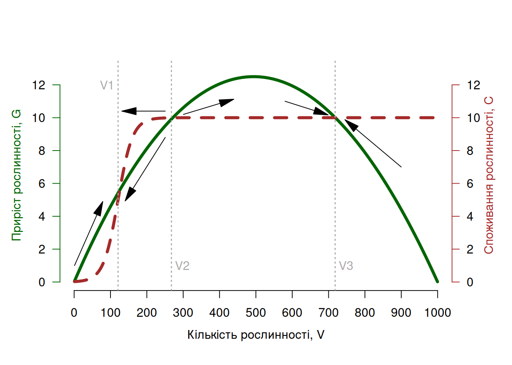
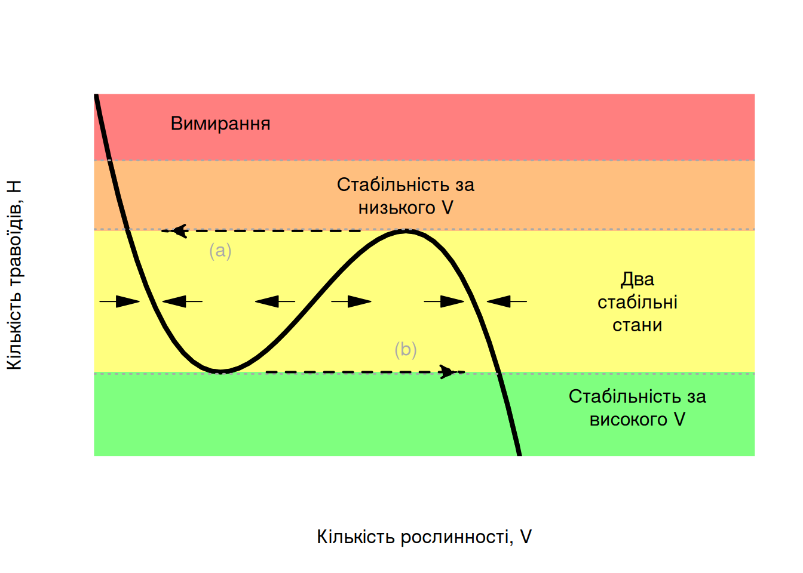
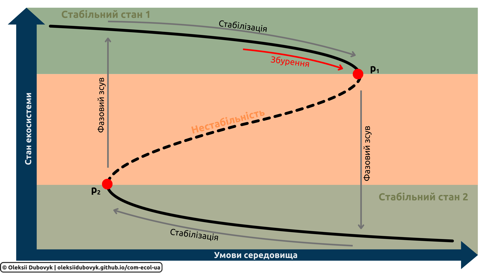
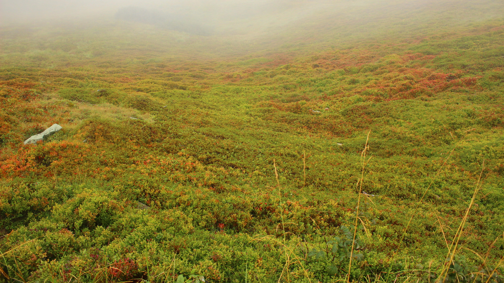

5.4 Сукцесія та клімакс
В попередньому розділі ми згадали експеримент із видалення одного виду в угрупованні, що призвело до зміни цілого угруповання (Рис. 5.14). Ці зміни відбулися не миттєво, а в доволі чітких етапах: спочатку почали домінувати морські жолуді, а з часом їх витіснили мідії. Якщо ці види стали більш чисельними, інші види зникнули з угруповання взагалі. Із цього виникає питання, наскільки зміни угруповання передбачувані і чи угруповання реагує на збурення як одне ціле.
5.4.1 Супер-організми чи індивідуалісти?
Ідея угруповання як одного цілого далеко не нова. Ще 1899 року американський ботанік Генрі Ковлз (Henry Cowles) опублікував описи угруповань рослин в градієнті від плеса озера Мічиган вглиб піщаних дюн (Cowles 1899). На його думку, за цим градієнтом можна було прослідкувати історичні зміни в структурі угруповань: якщо із часом озеро відступає і залишає по собі піщаний субстрат, який із часом займає рослинність, то угруповання ближче до води відповідатимуть молодішим угрупованням, а глибше до континенту ми спостерігатимемо старішу й зрілішу рослинність (Рис. 5.16). Такий підхід сьогодні відомий як заміна часу простором (space-for-time substitution), що дозволяє досліджувати історичні зміни біоти без необхідності довготривалих й трудомістких часових серій коли можна виважено припустити що просторові градієнти є проксі до часових градієнтів.

Рис. 5.16: Спостереження Ковлза за рослинністю піщаних дюн озера Мічиган вказує на поступове заміщення одними рослинними угрупованнями інших; можна припустити, що такі ж процеси відбувались протягом історичного часу в міру того, як озеро відступало і оголювало піщаний субстрат. (За Cowles (1899) із використанням іконок з Canva).
Ковлз помітив, що угруповання на різних дистанціях від води мають подібні комплекси видів. Так, найближчими до плеса завжди бувають трав’янисті рослини на кшталт Ammophila (= Calamagrostis), житняка Agropyron, чи пирійника Elymus; за ними йде пояс кущистих рослин на кшталт невеликих верб Salix cordata та S. glauca чи ялівець Juniperus; і, нарешті, ще вище починають панувати деревні рослини, як-то тополі Populus, дуби Quercus, сосни Pinus, та клени Acer. Із цього спостереження він зробив висновок про існування таких собі дюнних комплексів рослин: на його думку, угруповання певної зони не є просто комбінацією індивідуальних видів рослин, а існує та займає дюну як одне ціле. Коли рослинність вказує на вік дюни, то можна помітити що найстаріші угруповання застрягають на певному етапі. Наче як із онтогенезом окремого організму, угруповання дозрівають до стабільного стану лісу і після цього вже не змінюються.
Цей погляд за певний час розвинув Фредрік Клеменз (Frederic Clements). На його думку, угруповання функціонують як суперорганізми, і наче звичайні організми, всі шляхи розвитку угруповання ведуть до певної зрілої та стабільної стадії (Clements 1916). На його думку, шлях до такого зрілого стану лежить через проміжні ланки, які він назвав “серами” (sere), і серичні угруповання (як-то трав’яниста рослинність та чагарники на дюнах озера Мічиган) є чимось на кшталт проміжних стадій розвитку угруповання, котрі характеризуються стабільним набором видів. Залежно від середовища, розвиток угруповань буде наслідувати певну послідовність, або серію, які, зважаючи на початкове середовище, можна було б назвати гідросерією (починається з води, як-то піщані дюни в дослідженні Ковлза), літосерією (починається із кам’янистого субстрату), псамосерією (початок з піщаного субстрату), ксеросерією (початок із сухого середовища), чи галосерією (початок із засоленого субстрату).
Концепція суперорганізму викликала певний супротив з-поміж екологів того часу. Клемензівський підхід постулював, що угруповання в ідентичних середовищах завжди конвергують до однакового зрілого угруповання. Однак, як-то формально аргументував Генрі Ґлізон (Henry Gleason), існує чимало прикладів коли дуже різні флори вкривають ділянки із ідентичними характеристиками середовища (Gleason 1926). Ранні дослідження Ґлізона були побудовані на клеменсівських ідеях що структуру рослинності можна пояснити через теорію серій, і спостережені рослинні асоціації завжди наближаються до ідеалізованих серів. Однак, за певний час він почав піддавати ці ідеї сумнівам: зі спостережень Ґлізона, природні угруповання не були такими гомогенними, як би то передбачав Клеменз, і навіть іноді більш нагадували випадкові комбінації видів. Нарешті, на його думку, кожен окремий вид має власну реакцію на середовища, і відтак структура угруповання в певний момент його розвитку є функцією комбінації окремих видів із їх індивідуальною реакцією на умови середовища (Рис. 5.17). На жаль, свого часу на користь авторитета Клеменза ідеї Ґлізона були проігноровані, через що останній вирішив закинути екологію та сфокусувався на таксономії рослин.

Рис. 5.17: Клемензівська школа переконувала, що серичні асоціації рослинності є стабільними структурами протягом історії розвитку угруповання, і угруповання видів реагують на середовища як одне ціле (a); натомість, ґлізонівські погляди надавали більше індивідуалізму реакції окремих видів на середовище (b).
Сьогодні ми б, мабуть, не були такими категоричними як Клеменз чи Ґлізон. Суперорганізмовий підхід передбачає, що між стадіями розвитку угруповання повинні існувати різкі переходи, в той час як індивідуалістичний підхід передбачає більш-менш рівномірні стохастичні переходи. Обидва варіанти є крайніми випадками цілого діапазону можливостей: з одного боку, невипадкові комбінації видів в угрупованнях трапляються доволі часто, однак не настільки аби стверджувати їх постійність. Моделювання показує, що варіація інтенсивності конкуренції між видами може сприяти утворенню стабільних міжвидових асоціацій, в той час як гомогенні слабкі взаємодії між популяціями створюють патерни, що більше узгоджуються із індивідуалістичним підходом (Liautaud et al. 2019). Подібно до моделювання, емпіричні дослідження рослинних угруповань не надають вичерпної підтримки ані клемензівській, ані ґлізонівській парадигмі (Resasco et al. 2024).
5.4.2 Сукцесія
Загалом, ідею того, що угруповання змінюються в передбачуваній та спрямованій манері називають сукцесією (succession). Цей термін було вперше використано для опису історичного заміщення геологічних порід на початку 19-го сторіччя, і вже за декілька десятиліть американський філософ-натураліст Генрі Девід Торо формально описав явище заміщення відкритих ділянок лісом як “сукцесію лісовими деревами” (Thoreau 1859). Дослідження рослинності піщаних дюн Ковлза, що описані вище, надали початок генералізації поняття сукцесії: усяке угруповання проходить через чітку хронологічну послідовність, або серію, стадій із незаселеного субстрату (напр., піщаної дюни) до сформованого угруповання (напр., ліси). На думку Ковлза, стадії таких хронологічних послідовностей є стабільними й передбачуваними, а отже стадії сукцесії є лише функцією умов середовища. Іншими словами, ранні погляди на сукцесію передбачали, що за ідентичних умов угруповання проходитимуть через ідентичні стадії сукцесії. Чому ж ми бачимо різноманіття угруповань? – тому що сукцесія в різних угрупованнях почалася в різний час. Початком сукцесії можна вважати такий момент, коли незаселений субстрат заселяється першими організмами.
Подальший розвиток ідей Ковлза і постулювання Клемензом ідеї угруповань як суперорганізмів лише зміцнило такі погляди на сукцесію. Із простої генералізації виросла теорія сукцесій, в межах якої сукцесія складається із декількох визначних етапів:
види-піонери заселяють попередньо незаселений субстрат, і своєю життєдіяльністю змінюють середовище існування, чим роблять його сприятливим для інших видів;
сприятливе середовище стає придатним для інвазії нових видів;
пізні інвайдери вступають в стан рівноваги із піонерами та умовами середовища, чим формують зріле та стабільне угруповання.
Така теорія передбачає, що сукцесія починається із заселення нового середовища, яке до моменту заселення було просто мертвим субстратом і представляло вакантне середовище для піонерів. Сьогодні ми назвемо такий процес первинною сукцесією (primary succession). Можна уявити, що на планеті не так і багато вакантних середовищ без жодних живих організмів: відтак, первинну сукцесію можна спостерігати лише у виключних випадках на кшталт піщаних дюн, вулканічних островів, чи на рукотворних субстратах на кшталт будівель (Рис. 5.18). Однак, можуть також існувати збурення, котрі знищують помітну частину угруповання та, все ж, не до такого ступеню аби залишити повністю мертвий субстрат. Після подібних подій ми також спостерігатимемо динаміку сукцесії, але оскільки вона не починається із вакантного середовища, ми називатимемо її вторинною сукцесією (secondary succession). Така сукцесія спостерігається, наприклад, після лісових пожеж чи подібних природних катастроф, а також після вирубки чи інших антропогенних актів знищення середовища.
![Класичний приклад первинної сукцесії на кам'янистому субстраті, наприклад, старих будівель (***а***): вакантний камінь (***b-1***) заселяють лишайники (***b-2***), котрі своїми метаболітами (зокрема, карбон діоксидом від дихання, котрий може розчинятись у дощовій воді з утворенням карбонатної кислоти) пом'якшують кам'яний субстрат і створюють придатні умови для закріплення мохів (***b-3***), які, в свою чергу, за безліч циклів відмирання старих тканин можуть створити тонкий шар ґрунту, на котрому можуть зростати трав'янисті рослини і, зрештою, кущі та дерева (***b-4***). (Фото із замку Marienburg в Нижній Саксонії, Німеччина).](images/succession.png)
Рис. 5.18: Класичний приклад первинної сукцесії на кам’янистому субстраті, наприклад, старих будівель (а): вакантний камінь (b-1) заселяють лишайники (b-2), котрі своїми метаболітами (зокрема, карбон діоксидом від дихання, котрий може розчинятись у дощовій воді з утворенням карбонатної кислоти) пом’якшують кам’яний субстрат і створюють придатні умови для закріплення мохів (b-3), які, в свою чергу, за безліч циклів відмирання старих тканин можуть створити тонкий шар ґрунту, на котрому можуть зростати трав’янисті рослини і, зрештою, кущі та дерева (b-4). (Фото із замку Marienburg в Нижній Саксонії, Німеччина).
5.4.3 Клімаксичні екосистеми
“Звідки ми прийшли? Хто ми? Куди ми йдемо?”
— Гоген
Важливою характеристикою клемензівської сукцесії є її спрямованість: стадії сукцесії завжди переходять в напрямку від вакантного субстрату до зрілого угруповання. Чому угруповання не можуть рухатись в протилежному напрямку? Наприклад, чому лукам би не замістити зрілий ліс, а лишайникам не витіснити мохи із валуна?99 Класична теорія сукцесії дає декілька потенційних механізмів:
Первинні сукцесійні організми (котрих ми ще раніше назвали піонерами), зазвичай, мають вищу здатність до поширення порівняно із пізніми інвайдерами, чим можна пояснити їх першість у заселенні вакантного середовища. Зокрема, рудеральні рослини можуть мати високу продукцію насіння та адаптації до швидкого їх поширення (наприклад, анемохорія – поширення вітром) і швидкі темпи росту, котрі дозовляють їм швидко зайняти вакантну територію. Однак, такі види часто є слабкими конкурентами, і тому з часом здаються під тиском конкуренції із пізнішими інвайдерами100.
Пізній прихід видів, що типові для зрілих угруповань, можна також пояснити їх повільними темпами росту: за той час доки первинні колонізатори встигають закріпитись в субстраті та наростити біомасу, пізніші види цього би просто не встигнули, і тому ми їх не спостерігаємо на ранніх стадіях сукцесії.
Фасилітація (facilitation): ранні організми змінюють середовище таким чином, що воно стає придатним для пізніших видів, однак пізні види не створюють придатне середовище для ранніх організмів. Наприклад, ґрунтоутворення мохами створює умови для існування трав’янистих рослин, однак цей же ґрунт є вельми непридатним субстратом для лишайників із попередньої стадії сукцесії. Питання “а навіщо тоді ранні організми так роблять?” є доволі валідним і належать до категорії еволюційних питань на кшталт “навіщо ціанобактерії почали виробляти токсичний кисень чим зумовили масове вимирання на планеті?” – скоріш за все, зміна середовища існування є стратегією конкуренції із іншими ранніми колонізаторами, і той факт що середовище стає придатним для пізніших конкурентів є, скоріше, неочікуваним побічним ефектом.
Можна припустити, що сукцесія рухається в напрямку більшої стабільності угруповань. Якщо в сукцесії є визначена початкова стадія, то цілком логічним питанням буде “чи у неї є кінець?” Дійсно, траєкторія сукцесії має мати напрям до певної кінцевої стадії. Ковлз охрестив таку стадію клімаксом (climax) – стабільною стадією розвитку угруповання, що перебуває у рівновазі із середовищем і не має подальших стадій розвитку. Прикладом клімаксичних екосистем можна назвати буково-дубові праліси101: коли такі ліси досягають зрілості, новим видам складно колонізувати ці угруповання, і відтак їх склад залишається стабільним, в той час як їх зникнення, окрім як вирубування, можуть викликати хіба радикальні кліматичні зміни (Mette et al. 2013).
Отже, клімаксична екосистема є кінцевою стабільною стадією сукцесії. Якщо сукцесія є передбачуваною серією стадій, то чи можна передбачити як виглядатиме стадія клімаксу? На думку Ковлза, так: подібно до сукцесії в цілому, клімакс є функцією локальних кліматичних умов, а отже всі екосистеми в певному середовищі конвергуватимуть до певного “архетипу”. Уявлення про те, що піонерне угруповання через стадії потенційних серичних угруповань завжди сукцесує до ідентичного клімаксу в ідентичних умовах стало відомим як моно-клімаксична теорія сукцесії (mono-climax; Clements 1936).
Моно-клімаксичний підхід ефективно визнає локальні кліматичні умови як єдиний визначний фактор у формуванні угруповань. Однак, в межах одного кліматичного регіону можна спостерігати дуже значне різноманіття екосистем – мабуть, більше аніж можна було би пояснити лише як екосистеми на різних стадіях єдиної сукцесійної траєкторії. Окрім клімату, угруповання й екосистеми піддаються впливу варіації в багатьох інших факторах: концентрації поживних речовин, доступності ґрунтових вод, топографії, біотичних взаємодій тощо. Артур Тензлі102 свого часу звернув увагу на таку невідповідність між спостереженнями та теорією, і виступив зі значною критикою концепції. Наприклад, він запропонував звертати увагу на різницю між автогенною (такою, що індукована змінами в самому угрупованні) та аллогенною (такою, що відбувається під дією сторонніх факторів) сукцесією, а також розглядав сукцесію як континуальний процес, чим наближався в поглядах до індивідуалістичної парадигми Ґлізона як альтернативі дискретних ступенів сукцесії й супер-організмовій парадигмі Клеменза (Tansley 1935). Щодо ж існування єдиного істинного клімаксу для певних кліматичних умов, Тензлі вважав що траєкторія сукцесії може варіювати на будь-якому етапі розвитку угруповання—від початкових серів й до клімаксу,—і тому вигляд клімаксичних систем є дещо стохастичним. Такий погляд Тензлі назвав полі-клімаксичною парадигмою (poly-climax).
Якщо ж повністю відкинути ідею супер-організмо-подібних комплексів і стабільних клімаксів, щось на кшталт клімаксу все одно можна описати. На думку Віттекера, індивідуальна реакція видів в межах угруповання на зміни середовища і сумарний розвиток угруповання в часі можливий із досягненням стадії, котра матиме подібні властивості між окремими випадками (Whittaker 1953). Такі клімакс-патерни (climax-patterns) є лишень сумою індивідуальних видів, адаптованих до конкретних умов, і, відтак, клімаксу як такого не існує. Загалом, варто розуміти, що в той час як сукцесія від свого початку до клімаксу може займати десятки-сотні років, її динаміка є лише частиною більших еко-еволюційних процесів котрі тривають тисячоліття й більше (Walker & Wardle 2014). Екосистеми, які на перший погляд виглядають клімаксичними, все одно піддаються стохастичним змінам, і навіть якщо вони здаються стабільними й незмінними, вони навряд чи є кінцевими й остаточними ланками сукцесії.
5.4.4 Альтернативні стабільні стани
З одного боку, ідея клімаксу може здаватись привабливою завдяки своїй простоті: менеджерам-природоохоронцям, наприклад, було б дуже зручно сказати “якщо ми заповімо цю площу, то в ідеалі з часом вона досягне такого-то кінцевого стану”. З іншого боку, концепція клімаксу є застарілою і реальні екосистеми можуть розвиватися за дуже різними траекторіями. Чи означає це, що динаміка екосистем є непередбачуваною й хаотичною? Мабуть, що ні, адже навіть в квазі-клімаксичних умовах часто спостерігаються декілька альтернативних станів в яких може перебувати екосистема. Наприклад, різні комбінації концентрацій сполук Фосфору і розчиненого органічного Карбону в озерах можуть перемикати екосистеми зі стану низької концентрації хлорофілу до стану високої концентрації (“цвітіння”), і озера майже не перебувають в проміжних станах між цими двома (Beisner et al. 2003); коралові рифи під дією надмірного вилову риби та ураганів можуть перемикатися в стан домінування макроводоростей із катастрофічним вимиранням коралових поліпів (Hughes 1994); лісові пожежі “перемикають” стан лісів в стан лук, котрий підтримується подальшим виїданням молодих пагонів слонами в екосистемах східної Африки (Dublin et al. 1990)103. Як би нам не хотілося в негативному світлі уявляти стан цвітіння води, вимирання коралів, чи знеліснення саванни, всі ці стани є доволі стабільними – чим не клімакс? Однак, оскільки екосистеми так само стабільно можуть перебувати в здоровіших альтернативних станах (чистої води, здорових коралів, та лісів відповідно), то ми маємо справу не стільки з одним стабільним клімаксом, а із альтернативними стабільними станами (alternative stable states, ASS) – існуванням системи в різних конфігураціях (наприклад, в сенсі видового складу, структури трофічних ланцюгів тощо) за ідентичних умов середовища.
Класичну формальну теорію альтернативних стабільних станів запропонував Ной-Мейр для системи пасовища-травоїдів (1975), і його ідеї можна прослідкувати в подальшій літературі щодо альтернативних стабільних станів. Уявімо просту систему із вегетацією, котра доступна для споживання травоїдами або для додаткового росту рослинності. Скажімо, рослинність в момент часу (наприклад, зелена біомаса на одиницю площі) вимірюється як змінна \(V\). Рослинність росте із темпом \(G\) (первинна продукція). Водночас, в тій же системі існують травоїди, що споживають цю рослинність, із щільністю \(H\) (наприклад, кількість особин худоби на одиницю площі). Темпи споживання на особину, \(c\) залежать тільки від кількості доступної рослинності \(V\). Сумарний темп споживання, отже, можна знайти зваживши на розмір популяції травоїдів: \(C = cH\). Тоді сумарний темп зміни рослинності можна описати як
\[\frac{dV}{d\tau} = G - cH\]
В цілому, ріст рослинності за такого сценарію нагадуватиме логістичний, хоча можливі й інші варіації. За логістичного росту, пам’ятаймо, що кількість рослинності наближатиметься до стану рівноваги в наближенні до певної ємності середовища, \(K\).
Code
lg <- function(t, N0 = 1, K = 1000, r = 0.5){
K/(1-(1-(K/N0))*exp(-r*t))
}
time <- seq(0, 30, 0.1)
V <- lg(time)
G <- V[2:length(V)] - V[1:(length(V) - 1)]
plot(V[-length(V)], G, type = "l",
xlab = "Кількість рослинності, V",
ylab = "Приріст рослинності, G",
lwd = 4)
text(1000, 5, labels = "K")
shape::Arrows(x0 = 1000, y0 = 4.5, x1 = 1000, y1 = 1,
arr.type = "triangle", col = "darkgray")
Водночас, може існувати різний зв’язок між кількістю доступної рослинності \(V\) та її сумарним споживанням \(C\). Наприклад, це може залежати від того, наскільки травоїди ефективно знаходять рослинність для споживання і скільки часу у них займає цей пошук. Загалом, можна уявити приблизно наступний функціональний зв’язок:
Code
plot(x = 0:1000, y = ((1/(1 + exp(-0.01*(0:1000)))) - 0.5)*30,
type = "l", lwd = 4, xlim = c(0, 1150), ylim = c(0, 15.5),
xlab = "Кількість рослинності, V", ylab = "Споживання рослинності, C")
text(1090, 15, "H >> 1")
lines(0:1000, ((1/(1 + exp(-0.01*(0:1000)))) - 0.5)*15, lwd = 4)
text(1090, 7.5, "H > 1")
lines(x = 0:1000, y = ((1/(1 + exp(-0.01*(0:1000)))) - 0.5), lwd = 4)
text(1090, 0.5, "H → 0")
Цікаві речі починають відбуватись, коли ми перетнемо взаємозв’язки \(V\)-\(G\) та \(V\)-\(C\) на одному графіку: залежно від форми обох кривих, система може мати дуже різні стани рівноваги. На цих графіках, стрілки вказують на траєкторію розвитку системи до стану рівноваги (тобто система в стані комбінації параметрів, що відповідають початку стрілки, із часом зміниться в напрямку, на який вказує ця стрілка). Ось, наприклад, якщо травоїди стабільно споживають мало рослинності, то це дозволятиме рослинності відновлюватись (хоча й повільніше ніж за відсутності травоїдів, тому рівноважне \(V^* < K\)):
Code
par(mar = c(5, 4, 4, 4) + 0.1)
ylm <- c(0, 13)
plot(V[-length(V)], G, type = "l",
xlab = "",
ylab = "",
lwd = 4, col = "darkgreen", axes = F, ylim = ylm)
axis(2, ylim = ylm, col = "darkgreen", las = 1)
mtext("Приріст рослинності, G", side = 2, line = 2.5, col = "darkgreen")
axis(1, pretty(c(0, 1000), 10))
mtext("Кількість рослинності, V", side = 1, col = "black", line = 2.5)
par(new = T)
plot(x = 0:1000, y = ((1/(1 + exp(-0.003*(0:1000)))) - 0.5)*30,
type = "l", lwd = 4, lty = 2, col = "brown",
xlab = "", ylab = "", axes = F, ylim = ylm)
axis(4, ylim = ylm, las = 1, col = "brown")
mtext("Споживання рослинності, C", side = 4, col = "brown", line = 2)
text(970, 4, labels = "K", col = "darkgray")
abline(v = 1000, lty = 3, col = "darkgray", lwd = 1.5)
text(620, 1, labels = "V*", col = "darkgray")
abline(v = 650, lty = 3, col = "darkgray", lwd = 1.5)
shape::Arrows(x0 = 900, y0 = 12, x1 = 710, y1 = 11.3,
arr.type = "triangle")
shape::Arrows(x0 = 510, y0 = 14.3, x1 = 630, y1 = 12,
arr.type = "triangle")
Однак, якщо ж споживання рослинності перевищує її здатність до регенерації, то стабільним станом в такій системі стане хіба вимирання рослинності:
Code
par(mar = c(5, 4, 4, 4) + 0.1)
ylm <- c(0, 16)
plot(V[-length(V)], G, type = "l",
xlab = "",
ylab = "",
lwd = 4, col = "darkgreen", axes = F, ylim = ylm)
axis(2, ylim = ylm, col = "darkgreen", las = 1)
mtext("Приріст рослинності, G", side = 2, line = 2.5, col = "darkgreen")
axis(1, pretty(c(0, 1000), 10))
mtext("Кількість рослинності, V", side = 1, col = "black", line = 2.5)
par(new = T)
plot(x = 0:1000, y = ((1/(1 + exp(-0.01*(0:1000)))) - 0.5)*30,
type = "l", lwd = 4, lty = 2, col = "brown",
xlab = "", ylab = "", axes = F, ylim = ylm)
axis(4, ylim = ylm, las = 1, col = "brown")
mtext("Споживання рослинності, C", side = 4, col = "brown", line = 2)
text(970, 15.8, labels = "K", col = "darkgray")
abline(v = 1000, lty = 3, col = "darkgray", lwd = 1.5)
text(30, 15.8, labels = "V*", col = "darkgray")
abline(v = 1, lty = 3, col = "darkgray", lwd = 1.5)
shape::Arrows(x0 = 900, y0 = 14, x1 = 750, y1 = 14,
arr.type = "triangle")
shape::Arrows(x0 = 300, y0 = 13, x1 = 180, y1 = 9,
arr.type = "triangle")
Можлива й присутність нестабільної рівноваги (лівий перетин ліній, \(V1\)): наприклад, коли інтенсивне споживання рослинності за її низької біомаси спричинятиме або—за незначного зменшення біомаси—подальше вимирання рослинності (стрілочка ліворуч), або—за незначного прирощення біомаси—подальше прирощення рослинності і перехід системи до стабільної рівноваги (правий перетин, \(V2\)):
Code
par(mar = c(5, 4, 4, 4) + 0.1)
ylm <- c(0, 13)
plot(V[-length(V)], G, type = "l",
xlab = "",
ylab = "",
lwd = 4, col = "darkgreen", axes = F, ylim = ylm)
axis(2, ylim = ylm, col = "darkgreen", las = 1)
mtext("Приріст рослинності, G", side = 2, line = 2.5, col = "darkgreen")
axis(1, pretty(c(0, 1000), 10))
mtext("Кількість рослинності, V", side = 1, col = "black", line = 2.5)
par(new = T)
plot(x = 0:1000, y = ((1/(1 + exp(-0.1*(0:1000)))) - 0.5)*20,
type = "l", lwd = 4, lty = 2, col = "brown",
xlab = "", ylab = "", axes = F, ylim = ylm)
axis(4, ylim = ylm, las = 1, col = "brown")
mtext("Споживання рослинності, C", side = 4, col = "brown", line = 2)
abline(v = 273, lty = 3, col = "darkgray", lwd = 1.5)
abline(v = 715, lty = 3, col = "darkgray", lwd = 1.5)
text(240, 1, labels = "V1", col = "darkgray")
text(750, 1, labels = "V2", col = "darkgray")
shape::Arrows(x0 = 230, y0 = 10.8, x1 = 100, y1 = 10.8,
arr.type = "triangle")
shape::Arrows(x0 = 285, y0 = 10.8, x1 = 330, y1 = 12,
arr.type = "triangle")
shape::Arrows(x0 = 520, y0 = 10.8, x1 = 620, y1 = 10.8,
arr.type = "triangle")
shape::Arrows(x0 = 900, y0 = 6.4, x1 = 790, y1 = 9,
arr.type = "triangle")
Нарешті, дві стабільні рівноваги (наприклад, \(V1\) і \(V3\)) можуть існувати одночасно:
Code
par(mar = c(5, 4, 4, 4) + 0.1)
ylm <- c(0, 13)
plot(V[-length(V)], G, type = "l",
xlab = "",
ylab = "",
lwd = 4, col = "darkgreen", axes = F, ylim = ylm)
axis(2, ylim = ylm, col = "darkgreen", las = 1)
mtext("Приріст рослинності, G", side = 2, line = 2.5, col = "darkgreen")
axis(1, pretty(c(0, 1000), 10))
mtext("Кількість рослинності, V", side = 1, col = "black", line = 2.5)
par(new = T)
plot(x = 0:1000, y = ((10/(1 + exp(-0.05*(0:1000-120))))),
type = "l", lwd = 4, lty = 2, col = "brown",
xlab = "", ylab = "", axes = F, ylim = ylm)
axis(4, ylim = ylm, las = 1, col = "brown")
mtext("Споживання рослинності, C", side = 4, col = "brown", line = 2)
abline(v = 120, lty = 3, col = "darkgray", lwd = 1.5)
abline(v = 267, lty = 3, col = "darkgray", lwd = 1.5)
abline(v = 718, lty = 3, col = "darkgray", lwd = 1.5)
text(90, 12, labels = "V1", col = "darkgray")
text(297, 1, labels = "V2", col = "darkgray")
text(748, 1, labels = "V3", col = "darkgray")
shape::Arrows(x0 = 0, y0 = 1, x1 = 70, y1 = 4.5,
arr.type = "triangle")
shape::Arrows(x0 = 250, y0 = 8.8, x1 = 150, y1 = 5.3,
arr.type = "triangle")
shape::Arrows(x0 = 250, y0 = 10.4, x1 = 150, y1 = 10.4,
arr.type = "triangle")
shape::Arrows(x0 = 300, y0 = 10.2, x1 = 420, y1 = 11,
arr.type = "triangle")
shape::Arrows(x0 = 580, y0 = 11, x1 = 680, y1 = 10.3,
arr.type = "triangle")
shape::Arrows(x0 = 900, y0 = 7, x1 = 760, y1 = 9.6,
arr.type = "triangle")
Ми бачимо, що навіть коли реакція приросту рослинності (\(G\)) на її кількість (зелена лінія) залишається сталою, але змінюється тільки форма реакції інтенсивності споживання (\(C\)) на кількість доступної рослинності, то можна отримати дуже різні комбінації стійких і нестійких рівноважних станів. Якщо пригадати, що сумарна інтенсивність споживання \(C\) залежить від розміру популяції травоїдів (\(H\)), то очікувану динаміку системи можна зобразити як ізокліну (тобто таку лінію, яка відповідає нульовому росту \(G\)) у двофазному вимірі \(V\)-\(H\), котра у випадку альтернативних стабільних станів матиме характерну S-подібну форму:
Code
f <- function(x) -x^3 + 3*x
plot(seq(-2.2, 2.2, 0.1), f(seq(-2.2, 2.2, 0.1)),
type = "l", lwd = 4, xlim = c(-2.1, 4.5), ylim = c(-4, 5.5),
axes = F, xaxt = "n", yaxt = "n",
xlab = "Кількість рослинності, V", ylab = "Кількість травоїдів, H")
polygon(c(-2.5, -2.5, 5.5, 5.5), c(4, 6, 6, 4), col = rgb(1, 0, 0, 0.5), border = NA)
polygon(c(-2.5, -2.5, 5.5, 5.5), c(2, 4, 4, 2), col = rgb(1, 0.5, 0, 0.5), border = NA)
polygon(c(-2.5, -2.5, 5.5, 5.5), c(-2, 2, 2, -2), col = rgb(1, 1, 0, 0.5), border = NA)
polygon(c(-2.5, -2.5, 5.5, 5.5), c(-5, -2, -2, -5), col = rgb(0, 1, 0, 0.5), border = NA)
lines(seq(-2.5, 2.5, 0.1), f(seq(-2.5, 2.5, 0.1)), lwd = 4)
abline(h = 4, lty = 3, col = "darkgray", lwd = 1.5)
abline(h = 2.05, lty = 3, col = "darkgray", lwd = 1.5)
abline(h = -2.05, lty = 3, col = "darkgray", lwd = 1.5)
shape::Arrows(x0 = -2.3, y0 = 0, x1 = -2, y1 = 0,
arr.type = "triangle")
shape::Arrows(x0 = -1.2, y0 = 0, x1 = -1.5, y1 = 0,
arr.type = "triangle")
shape::Arrows(x0 = -0.2, y0 = 0, x1 = -0.5, y1 = 0,
arr.type = "triangle")
shape::Arrows(x0 = 0.2, y0 = 0, x1 = 0.5, y1 = 0,
arr.type = "triangle")
shape::Arrows(x0 = 2.3, y0 = 0, x1 = 2, y1 = 0,
arr.type = "triangle")
shape::Arrows(x0 = 1.2, y0 = 0, x1 = 1.5, y1 = 0,
arr.type = "triangle")
shape::Arrows(x0 = 0.5, y0 = 2, x1 = -1.5, y1 = 2,
arr.type = "curved", lwd = 2, lty = 2)
shape::Arrows(x0 = -0.5, y0 = -2, x1 = 1.5, y1 = -2,
arr.type = "curved", lwd = 2, lty = 2)
text(-1, 1.4, labels = "(a)", col = "darkgrey")
text(1, -1.4, labels = "(b)", col = "darkgrey")
text(-1, 5, labels = "Вимирання")
text(1, 3, labels = "Стабільність за\nнизького V")
text(3.5, 0, labels = "Два\nстабільні\nстани")
text(3.5, -3, labels = "Стабільність за\nвисокого V")
Пізніше, цю ідею генералізували в більш розмитому філософському світлі. Оригінальна ідея Ной-Мейра стосувалася лише однієї системи і мала дуже конкретні осі в графічному аналізі, і хоча й натякала на те, що існують критичні кількості травоїдів за яких система може перемкнутись на траєкторію до колапсу (a) чи такі мінімальні кількості рослинності за контрольованої чисельності травоїдів що дозволили б системі повернутись до високопродуктивного стану (b), її було важко застосувати для будь-якої іншої системи. Однак навіть така специфічна формалізація пропонує важливий урок щодо альтернативних стабільних станів: системі в певній конфігурації притаманно залишатись в цій конфігурації, і перемикання між альтернативними станами вимагає потужних зовнішніх впливів (Scheffer et al. 2001, Beisner et al. 2003). Цікаво, що очікування щодо переходів між альтернативними станами (на противагу випадковим змінам в структурі угруповання) можна використовувати для передбачення щодо змін угруповань в майбутньому, особливо за умов глобальних змін умов середовища (Godoy et al. 2024).
Альтернативні стабільні стани є прикладами ситуації з множиною потенційних рівноважних атракторів (Рис. 4.8-E,F). Перехід між альтернативними станами в літературі іноді називають біфуркацією (bifurcation), змінами режиму (regime shift), чи фазовими зсувами (phase shift), а критичні конфігурації з яких такі переходи стаються – переломними точками (tipping point). Миттєвий перехід від переломної точки може не одразу викликати відповідь в системі, адже популяції часто потребують часу для прояву динамічних процесів. Відтак, у фазових зсувах може існувати певна затримка. В разі динамічних флуктуацій умов середовища, ці умови можуть коливатись між переломними точками і спричиняти зміни угруповань туди-сюди між альтернативними стабільними станами. Такий сценарій відомий як гістерисис (hysteresis)(Рис. 5.19).

Рис. 5.19: Перехід екосистеми між двома альтернативними стабільними станами. Напрям траекторії системи та фазові зсуви від переломних точок \(p_1\) та \(p_2\) показані стрілками. Зверніть увагу, що система перебуває в циклі гістересису. Червона стрілка вказує на потенційне збурення, що може спричинити пришвидшення динаміки системи до переломної точки і подальшого фазового зсуву.
5.4.5 Збурення і стрес
Але що таке збурення? Класично, збурення (disturbance) визначають як відносно дискретну, часто стохастичну подію, котра порушує структуру та/чи функціонування системи (екосистеми, угруповання, чи популяції), і змінює доступність ресурсів чи фізичне середовище (White & Pickett 1985). Однією із найвизначніших дослідниць збурень є Моніка Турнер, котра переважно прославилася завдяки дослідженню змін ландшафтів під дією лісових пожеж в Йеллоустонському національному парку в США. В своїй лекції з нагоди отримання Нагороди Роберта МакАртура від Екологічного Товариства Америки, Турнер систематизувала теоретичні доробки станом на 2009 рік. Так, на її думку, режим збурення можна описати в поняттях їх частоти, інтервалу між подіями, інтенсивності, гостроти, та залишкових ефектів (Turner 2010). Однак, варто зазначити, що різкі фазові зсуви під дією збурень на одному масштабі можуть набувати вигляду стабільної динаміки на іншому – явище, котре Турнер охрестила змінною мозаїкою стабільного стану (shifting mosaic steady state). В якості аргументу Турнер наводить приклад ландшафтів Йеллоустона: свіжовигорілі ділянки лісу часто межують із такими ділянками, котрі вогонь не зачепив, часто формуючи складну мозаїку вигорілих й здорових ділянок лісу. З точки зору локального масштабу, пожежа є збуренням, котра спричиняє фазовий зсув до стану ранньої вторинної сукцесії. Однак, в масштабах цілого ландшафту, відсоток свіжовигорілих лісів залишається відносно сталим протягом історичного часу, як і функціонування екосистеми в цілому. Стан рівноваги залежить від масштабу: на дуже малих масштабах, що завгодно може стати збуренням, і відтак справжня рівновага не є можливою.
Важливо зазначити, що не все є збуренням. За визначенням, збурення має являти собою відносно дискретну подію, як-то виверження вулкану, лісова пожежа, затоплення, ураган, шторм, торнадо, спалах інфекційної хвороби чи шкідників тощо. Такі явища як, скажімо, жорсткі умови високогір’я чи антропогенний вплив самі по собі не підпадають під визначення збурення, адже вони не є дискретними чи стохастичними104. Для таких прикладів, натомість, можна застосувати поняття стресу-як-пульсу (pulse perturbation) та стресу-як-пресу (press perturbation). Якщо у випадку пульсу пертурбації є короткостроковими і після них в угруповання є час на реакцію, то у випадку пресу пертурбації є тривалими і вимагають угруповання до адаптації протягом дії стресу (Bender et al. 1984).
Не кожне збурення викликатиме перехід системи між альтернативними станами. В контексті альтернативних стабільних станів, реакцію угруповань на збурення чи стрес можна описати через інтенсивність пертурбації, необхідну для ініціації фазового зсуву – або його стійкість (resilience). Іншим поглядом на реакцію угруповання може бути його опір (resistance) – швидкість, із якою угруповання відновлюється після пертурбації (Holling 1973, Pimm 1984). Ці дві концепції вже не раз були згадані в інших контекстах, частково завдяки тому, що їх часто плутають в літературі.
Важливою приміткою тут буде те, що ці процеси мали б відбутися без зовнішніх впливів чи збурень. Звісно, ліси можна вирубати і засіяти на їх місці подібні на луки агроценози, однак природнє знеліснення є набагато менш правдоподібним сценарієм (тим не менш, не неможливим).↩︎
Явище, яке охрестили балансом між конкуренцією та колонізацією (competition-colonization trade-off): швидкі колонізатори часто є слабкими конкурентами, а сильні конкуренти – повільними колонізаторами↩︎
В Україні праліси є доволі цікавим прецедентом застосування концепції клімаксу в природоохоронному законодавстві. Якщо Лісовий кодекс у своєму визначенні пралісів керується лише критерієм відсутності антропогенного впливу (“праліси – споконвічний, стародавній ліс, що сформувався природнім шляхом в ході розвитку не зазнав безпосереднього антропогенного впливу”), то от поняття квазіпралісів (“умовно пралісові екосистеми, в яких відбувся незначний тимчасовий антропогенний вплив, що не змінив природної структури лісостанів і при припиненні якого натуральний стан екосистем повністю відтворюється протягом короткого періоду”) тонко натякає, що праліси є кінцевою і, припустимо, стабільною ланкою розвитку лісів.↩︎
Arthur G. Tansley найблільш відомий, мабуть, як науковець що запропонував термін “екосистема”.↩︎
Свого часу, проф. Наталія Калінович помітила подібну ситуацію на схилах гори Тарніца в Bieszczadzki Park Narodowy в Польщі: схили гори вкриті вираженими ярусами чорничників, котрі вказують на випасання вівцями, хоча на території національного парку такий випас заборонений. Скоріш за все, такі яруси були утворені випасом до створення парку, і з того часу структура рослинності збереглася завдяки суворим умовам високогір’я, котрі не дозволяють колонізацію іншою рослинністю.

↩︎Втім, деякі явища асоційовані із антропогенним впливом можна вважати збуреннями: наприклад, присутність людини в екосистемі, валка лісу, косіння газону тощо є дискретними подіями які з точки зору екосистеми можуть видаватись стохастичними.↩︎